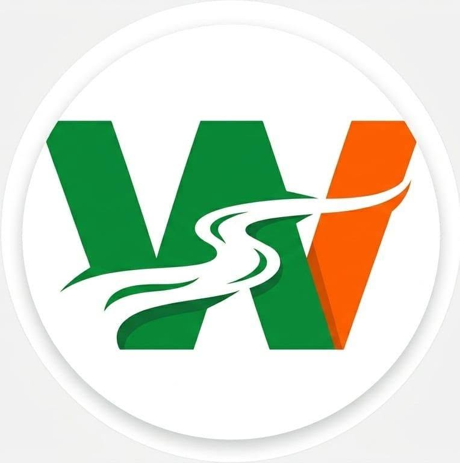

VAMOS JUNTOS
O MARANHÃO PRECISA DE VOCÊ.
Entre no canal oficial de voluntários no WhatsApp para receber orientações, materiais e as próximas ações da campanha.
Fique por dentro das mobilizações
Receba materiais para compartilhar
Participe das ações no seu bairro
Leve propostas à sua comunidade

ENTRE NO CANAL
O canal é o ponto de encontro da nossa rede de voluntários. Clique no botão abaixo para abrir o WhatsApp e entrar.
Ao entrar, você receberá atualizações da campanha pelo WhatsApp. Você pode sair do canal quando quiser.